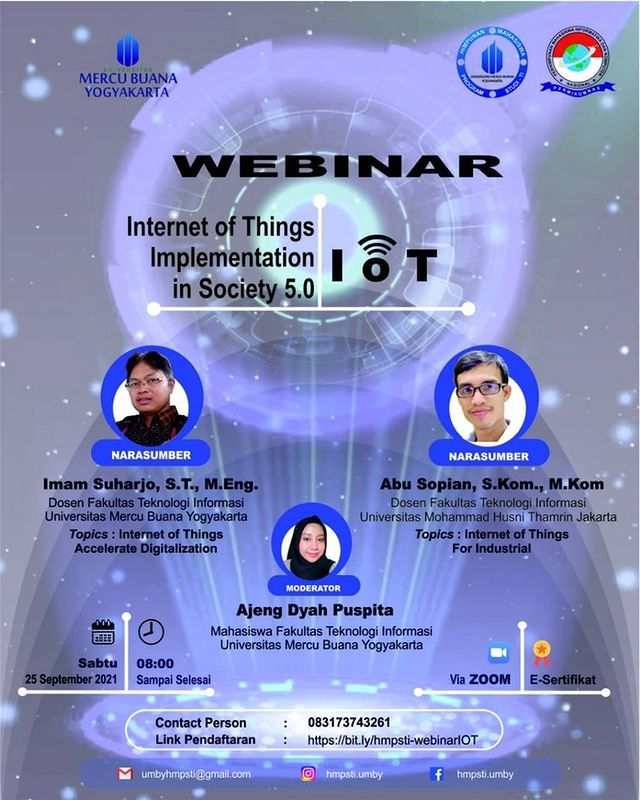

Deskripsi Event:

Konsep IoT cukup sederhana dengan mengacu pada 4 elemen utama pada arsitektur IoT yakni Device/sensor, connectivity, data processing dan user interface. Cara kerja IoT yaitu dengan memanfaatkan sebuah fungsi pemrograman (function) yang di mana tiap-tiap perintah argumennya disusun untuk menghasilkan interaksi antara sesame mesin yang terhubung secara otomatis tanpa campur tangan manusia dan dalam jarak berapapun.
IoT di Era Industri
“Implementasi IoT sendiri antara lain di bidang Kesehatan, smart cities seperti parking information system dimana terdapat sensor di beberapa tempat parker untuk menginformasikan ketersediaan tempat, di bidang agrikultur, Gudang, robot dan lain sebagainya.” jelas I Dewa Gede selaku pemateri dari ATOP Technologies.
Kekuatan dari IoT mengembangkan teknologi cerdas dimana dapat mengirimkan data dengan cepat, melakukan tracking, kemudinan menghemat waktu karena serta biaya karena dengan bantuan mesin yang memiliki kemampuan yang dapay diatur maka manusia tidak perlu melakukan hal berat dan rumit karena adanya IoT ini.
22 November 2021
90 Peserta
32 November 2021
Online